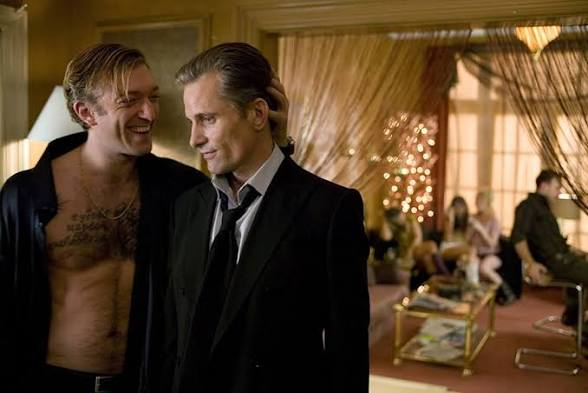

EASTERN PROMISES (2007) — CERTIFIED MGC AU-58

🏛 MGC LOWER COURT OF APPEALS
- ASSET TITLE: Eastern Promises (2007) – The Russian Vory Metallurgy Strike
- OFFICIAL REGISTRY GRADE: Certified MGC AU-58 (Choice About Uncirculated Specimen)
- LOWER COURT DOCKET: Judge Morpheus & Chief Grader MGC
- CASE FILE: #026
📜 THE INITIAL INQUEST BENCH ASSESSMENT (3-FLAW DEFECT LOG)
🔍 Flaw 1 (The Localized Pacing Friction)
- Under our strict 5x numismatic magnifying lens, the narrative alloy experiences a microscopic friction scuff during the mid-movie transition sequences in London, slightly delaying the film’s high-velocity dramatic traction.
🔍 Flaw 2 (The Planchet Texture Bleed)
- The dark, desaturated cinematic contrast fields intentionally introduce heavy shadow grain across the bathhouse sequence. While striking, it leaves a noticeable planchet blemish that disrupts pristine visual purity.
🔍 Flaw 3 (The Third-Act Tonal Scuff)
- The resolution of the undercover family lineage logs introduces a minor localized accuracy scuff against the raw, unvarnished gravity established in the opening acts, keeping the coin just beneath the Mint State vault thresholds.
CHIEF'S OVERRULING DECREE
-
1.Sustained
-
2.Overruled.
The bathhouse scenes is a legend amoung fans and the climax of the film. -
3.Sustained
, barely.
⚖️ 🔍 THE FINAL DECREE & CERTIFIED JUDGMENT (THE CLOSING SUMMARY)
-
The Fingerprint Identified:
While the cinematic alloy suffers permanent planchet scuffs due to the minor localized pacing friction during the mid-movie London transitions and the slight tonal scuff added by the undercover family lineage tracking logs, its raw operational velocity remains completely pristine under our strict magnifying lens. The Final Executive Verdict:
By forcefully overruling the visual objections against the legendary bathhouse climax—protecting it on the high-bench record as pure cinematic striking power and an absolute masterpiece for fans—the High Court successfully maintains the film’s elite action pedigree. The Supreme Court officially seals and strikes this film at a final, Certified Black Label MGC AU-58 Choice About Uncirculated Specimen rating. The numerical stacking order is locked, the Sheldon scale parameters are permanently engraved, and this high-velocity coin sits safely on our premier upper shelves. Case closed! ⚖️

• © 2026 MOVIE GRADING CONSENSUS. All Sovereign Rights Reserved.